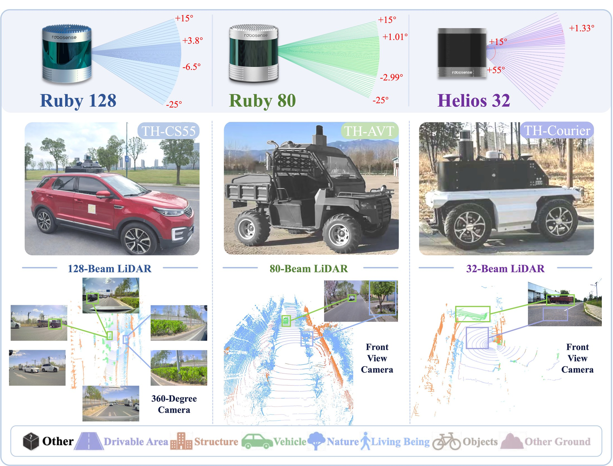

unseen sensor
CS55
Stable segmentation on a LiDAR never seen in training.
Different LiDARs do not see different worlds; they see different spectra of the same world.
LiEqualizer equalizes a sparse-LiDAR student's spectrum against a dense teacher — during training only. The deployed network is unchanged.
1 · School of Vehicle and Mobility, Tsinghua University, Beijing, China
2 · Department of Computer Science, National University of Singapore
* Corresponding authors
Main takeaway: read a LiDAR scan as a spectrum and the sensor gap becomes a band problem. A dense teacher still holds the bands a sparse scan lost, so a student can be taught to match them — restoring real detail in the encoder's code and suppressing invented detail in the decoder's logits. This buys up to +11.5 zero-shot cross-sensor mIoU with zero change to the architecture, the parameter count or the inference cost.
MotivationEngineers and researchers pay twice for LiDAR perception: a cheap sensor with few beams sees less of the scene, and every new sensor means new data, labels and training, team after team. Recent work cuts that cost by randomizing the sampling pattern during training, but ignoring a pattern does not return the measurements it never took, and putting them back has meant reconstructing the scan before the network reads it.
PerspectiveRead as frequencies, sparse sampling keeps a scan's coarse shape but weakens real detail and invents false detail — which a filter cannot do, but a sampler can. We prove sparse scans alone cannot bring the weakened detail back, but a teacher trained on densified scenes can.
MethodLiEqualizer distills the spectrum. A low-frequency branch restores what sampling weakened, in the encoder's compressed code, returning structure its beams missed; a high-frequency branch removes what sampling faked, in the decoder's voxel logits, so false detail cannot pass as real. Each acts only where the teacher's own response marks something to restore or remove.
ResultsAcross SemanticKITTI, Waymo and nuScenes, LiEqualizer delivers consistent zero-shot gains, raising cross-sensor mIoU by up to 11.5 points without altering the network, its parameter count, or the cost of training it. Its losses act only in training, so the deployed model keeps the baseline's architecture and inference cost, and the unchanged model transfers to three vehicles carrying unseen LiDARs.
On raw point clouds, sparse sampling attenuates real high frequencies. On the voxel grid the network actually reads, it injects near-white high frequencies — about 32× the teacher's, with the low-frequency shape left intact. A filter can only do the first. A sampler does both, which is why the method has two branches.
Both branches read responses of the same diffusion family, and both are gated by the frozen teacher: the gate decides where to match and where to suppress. The two branches differ in where in the network they act, which is what fixes their band.
In the encoder's compressed code, the student's smoothed response is matched to the teacher's where the teacher's gate is open, and driven toward zero where it is closed. That returns structure the student's beams never measured.
In the decoder's voxel logits, the student's high-pass response is matched to the teacher's where the teacher has detail, and suppressed toward the teacher's own level where it does not — so aliasing cannot pass as real detail.
Every number below is the same backbone, the same schedule and the same generated data as the randomized-sampling baseline. Only the training objective differs.
Read downwards from the undistilled student; each row adds one module. Brackets are the difference from the first row.
Re-implemented under one pipeline with the same teacher, the same student, the same signals and the same schedule, so that only the objective differs.
The deployed network is identical to the baseline's, so on-vehicle testing needs no re-integration. Results are qualitative: these platforms carry no labelled ground truth.
Stable segmentation on a LiDAR never seen in training.
Same weights, different beam pattern, no re-tuning.
A low-speed delivery platform with a sparser scan.

The film, the table it is built on, and the vehicles. Parts I and III are in preparation.
A two-minute overview film, in preparation. Until it lands, Fig 1 carries the same argument. Subtitled, not narrated.
Grey is the single-sensor baseline, orange the randomized-sampling baseline, blue LiEqualizer. Arrows mark the gain over the orange bars.
Real-vehicle clips, in preparation — the same ones the Downloads list promises. The still frames are in the On-vehicle section above.
The two diagnostic figures from the manuscript, re-drawn here from the released measurements rather than pasted in as pictures. Both read band by band, from the lowest-frequency band on the left.
The spectral measurement protocol is released with the code so the diagnosis can be reproduced on any sensor pair.
@article{xu2026liequalizer,
title = {LiEqualizer: Seeing the Lost Spectrum of Sparse LiDARs via Spectral-Invariant Distillation},
author = {Xu, Zikun and Yang, Shuocheng and Wang, Jianqiang and Li, Keqiang
and Lee, Gim Hee and Xu, Shaobing},
year = {2026},
note = {Preprint}
}
The diagnosis is a separate contribution: a measurement protocol that reports what sparse sampling does to a signal, and whether distillation repaired it. Every figure below is rendered live from the released measurements.